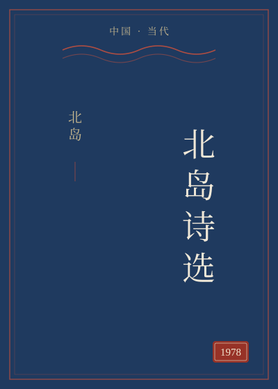
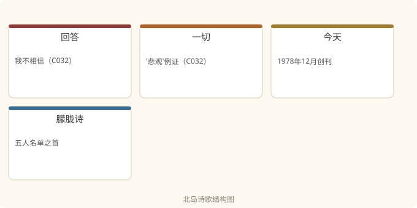

北岛诗选
一、基本信息
| 作者 | 北岛 |
|---|---|
| 成书/出版 | 诗作于1970年代以来；第一本国内诗集1986年（中国作家网 C032：广州'新世纪'出版社） 洪子诚：一首诗可以从什么地方读起——读北岛早期的诗（中国作家网）（官方文学机构） |
| 国别/地区 | 中国 |
| 时代 | 现当代 · 当代 |
| 体裁 | 诗选集 |
| 语言 | 汉语（白话自由体） |

北岛诗歌结构图（主题·结构图）
二、创作背景
中国作家网（C032）：1978年12月北岛、芒克等创办《今天》；《回答》初刊《今天》第1期、'次年被《诗刊》转载'。
朦胧诗定位（C032）：五人名单'北岛，舒婷，顾城、江河，杨炼'之首；'既有诗的意象和形式的创新，又有某种主题的确定性'。
三、内容脉络
《回答》：'告诉你吧，世界 / 我－不－相－信！'（C032）——否定式、宣言式诗情的典型。
《一切》常被当作'悲观'例证（C032）。
其他：《结局或开始》《雨夜》等（通说待核）。
四、主要人物表
| 人物 | 身份 | 说明 |
|---|---|---|
| 抒情主体 | 怀疑者 | '我不相信'的声音（C032） |
五、主题与艺术特点
- 怀疑与见证（C032：否定式宣言）。
- '冷抒情'的意象系统（通说待核）。
- 朦胧诗的'经典化'与新潮内部的更迭（C032：'打倒北岛'口号）。
六、影响与评论
- 中国作家网：朦胧诗五人名单之首；其争议'晦涩''颓废'批评与'经典'地位并存（C032）。
洪子诚：一首诗可以从什么地方读起——读北岛早期的诗（中国作家网）（官方文学机构） - 中国作家网：《今天》'民间刊物'对新诗潮的启动（C032）。
洪子诚：一首诗可以从什么地方读起——读北岛早期的诗（中国作家网）（官方文学机构）
七、阅读建议
难点
- 意象的复义。
- 70年代语境的缺失。
- 《北岛诗选》（新世纪出版社1986年——C032 口径）。
先《回答》《一切》→ 对照舒婷《致橡树》（通说）读朦胧诗论争。
八、待核实
- 选本篇目核对。
- 《回答》写作与发表年表（C032 已载）展开核对。
- 海外写作时期作品（《午夜歌手》等）待核。
本页主要来源
北岛的其他收录作品：北岛诗选